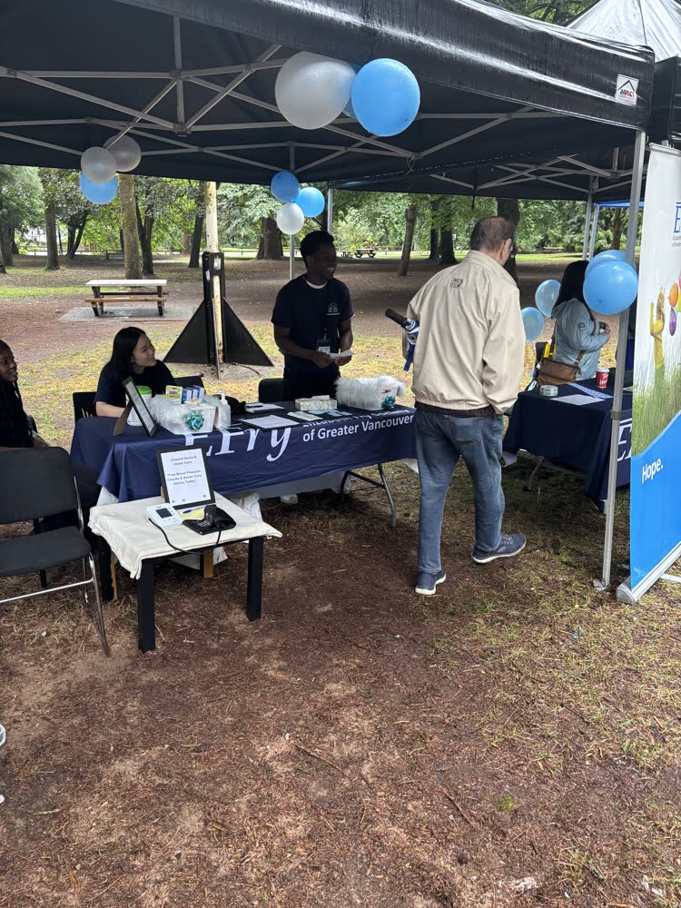

More Than a Ride: Complete Medical Advocacy & Companionship
Attending medical appointments can be exhausting and stressful for older adults, particularly those facing mobility limitations, hearing impairment, or memory challenges. Navigating parkades, waiting rooms, and rapid-fire medical terminology without support often leads to missed doctor instructions and medication errors.
OnPoint’s Senior Escort service provides attentive, trained caregivers or nurses who stay by your parent’s side every step of the way. We assist with transfers, listen closely to physician recommendations, ask clarifying questions, and deliver a clear summary to your family.
"You never have to worry about your parent sitting alone in a crowded hospital clinic or misunderstanding new prescriptions. We are their advocate and your trusted eyes and ears."

Comprehensive Appointment & Outing Support
From hospital day surgeries to routine community errands, we ensure safe and dignified outings.
Specialist & Hospital Clinics
Cardiology, oncology, orthopedic, neurology, and dialysis appointments at VGH, St. Paul's, Burnaby Hospital, or Jim Pattison Outpatient Care.
Outpatient Procedures & Eye Surgery
Meeting all hospital discharge criteria for same-day cataract surgery, colonoscopies, and minor surgical procedures requiring adult supervision.
Detailed Medical Note-Taking
Recording physician diagnoses, dosage changes, lab requisitions, and next appointment dates with digital reporting to family.
Pharmacy & Essential Community Errands
Picking up newly prescribed medications, stopping for groceries, optical appointments, dental visits, or visiting community centers.
How Our Door-Through-Door Service Works
A seamless, dignified protocol from departure to return home.
Pre-Appointment Preparation & Departure
Our caregiver arrives 30 to 45 minutes before departure to help your parent get dressed comfortably, gather health cards and previous medical records, and assist safely into the vehicle.
- Review of appointment objectives and medication list
- Transfer assistance and mobility aid setup (walker/wheelchair)
- Punctual departure to ensure a calm, unhurried transit
Clinic Navigation & Waiting Room Advocacy
We check in at the reception desk, assist with intake paperwork, ensure your parent remains comfortable and hydrated, and escort them directly into the examination room.
- Assistance with washroom trips and transfer onto examination tables
- Continuous presence to reduce anxiety in unfamiliar settings
- Advocating for clear communication from medical staff
Physician Consultation & Prescription Relay
During the doctor's visit, our caregiver takes structured clinical notes, asks clarifying questions, collects printed prescriptions, and routes them to the community pharmacy.
- Accurate recording of physician instructions and treatment plans
- Immediate pharmacy drop-off or delivery coordination
- Scheduling of subsequent follow-ups or diagnostic scans
Safe Return Home & Family Debrief
We settle your loved one back into their favorite armchair or bed with a warm snack, verify their comfort, and send a comprehensive digital debrief to family members.
- Safe vehicle exit, transfer into the home, and settling routine
- Detailed shift summary sent via our family portal
- Immediate notification to family of any urgent prescription changes
Book Senior Escort & Appointment Support
Reserve dedicated, door-through-door accompaniment for your parent's upcoming medical appointment.
Questions About Senior Escort Services
Unlike curb-to-curb rides, our caregivers provide complete door-through-door accompaniment. We help your parent get dressed, assist with transfers, navigate clinic waiting rooms, sit with them during the doctor's consultation, take clear clinical notes, collect pharmacy prescriptions, and settle them back safely at home.
Yes. Immediately following the appointment, our escort provides a clear digital summary detailing the physician's findings, new prescription instructions, follow-up timelines, and tests ordered.
Yes. Hospitals and surgical centers require a responsible adult to accompany patients after anesthesia or cataract surgery. Our nurses or certified care aides fulfill all clinical discharge criteria and stay with your parent post-procedure.
Our escort remains with your parent for the entire duration of the appointment regardless of clinic delays. We ensure they are comfortable, assist with snacks/water, and communicate timeline updates to family members.
Yes. Our caregivers are certified in safe body mechanics and transfer techniques, assisting with wheelchair loading, ramp navigation, and vehicle transfers.
Yes. We provide reliable transportation, stay by their bedside throughout 3–5 hour infusion sessions, provide comforting companionship, and assist them safely back home.
Absolutely. Escort visits can be structured to include multiple stops, such as collecting lab requisitions, picking up prescriptions from the pharmacy, and grocery shopping.
We recommend booking 48 hours in advance for routine visits, but we also accommodate same-day urgent appointment requests whenever possible.
Need Reliable Medical Appointment Support?
Our compassionate care team ensures your loved one travels safely and never attends a doctor visit alone.